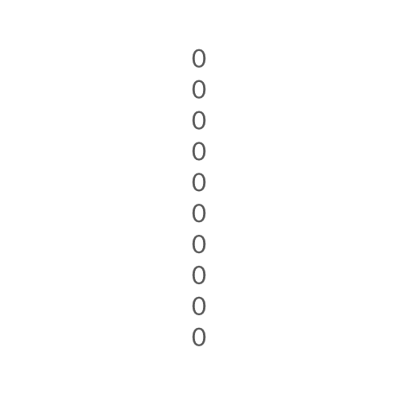
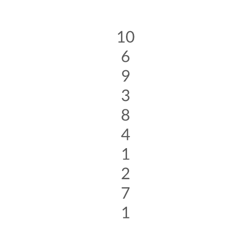
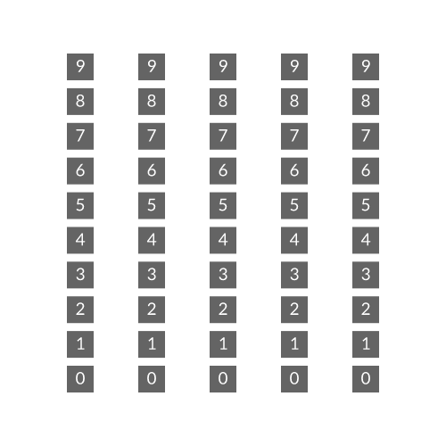

上下文
简介
Cavalry 的架构实现了一些出色而独特的事情。从表面上看，这意味着用更少的图层就能完成更多工作，但底层究竟发生了什么？
需要理解的核心概念是索引。索引只是一个传递给另一个图层的数字。复制器的一项基本职责就是为它生成的图形分配索引。这个索引可以被复制器和其他图层用来决定位置、旋转、颜色、边数……几乎任何东西。
假设用复制器创建了一列 10 个矩形。
在这个例子中，复制器创建了 10 个索引，并根据 Distribution 设置（此处为 Grid，Height 为 350，Size Mode 为 Fit）为每个复制出的图形提供一个位置。Index:0（第一个图形）被分配的 Position Y 为 0，Index:9（第十个、也就是最后一个图形）被分配的 Position Y 为 350，其他图形均匀分布在两者之间。
那么，如果把这个复制器添加到第二个复制器中会发生什么？这里第二个复制器被设置为 Grid，Count X = 5、Count Y = 1。

这些索引会传递到第二个复制器的图形上。随着复制器被复制，这一索引数量会持续在图形网络中流动。
这里有一个实际示例：
- 创建一个文本图形。
- 使用 String 属性旁的
+按钮，添加一个字符串生成器。 - 将 Generator 设置为 Value。
- 将文本图形添加到一个复制器中。
- 在 Grid Distribution 上将 Count 设置为 X = 1、Y = 10。
结果：一列零。

从表面上看，这里并没有什么特别有趣的事情发生 😉 但这只是因为我们还没有让复制器对这些索引做任何处理。那么，让它生成一些随机值传给 Number 属性吧。
结果：每个数字都是 0 到 10 之间的随机数（默认值）。

上述效果之所以能够实现，是因为复制器为每个数字提供了一个索引，而随机行为利用了这一上下文。
- 复制器向字符串生成器询问 10 次它的 Number。
- 接着，字符串生成器又向随机询问 10 次它的 Number 值。
- 在这 10 次询问中，随机接收到的索引值依次为：0、1、2、3、4、5、6、7、8、9。
- 根据每个索引，随机会改变它的 Seed 值以产生不同的结果。
这一思路可以应用到 Cavalry 中的任何属性上。下面用同样的方法影响多边形的边数。
这一概念可用于噪波变形器、颜色、描边宽度、路径长度、模糊滤镜、资源数组、动态渲染……任何东西。可能性无穷无尽！😎
切换到手动模式
有时可能需要手动控制这些索引的分配方式。这分为两个层面。第一是阻止复制器使用“传入的索引”。
以我们那个矩形网格（被复制的复制器）为例：
- 在属性编辑器中，取消勾选 Duplicator1 的 Advanced 选项卡下的 Use Index Context。

现在，来自 Duplicator1 的索引会循环传递到第二个复制器。
要进一步延伸这一思路，需要借助上下文索引工具的帮助。